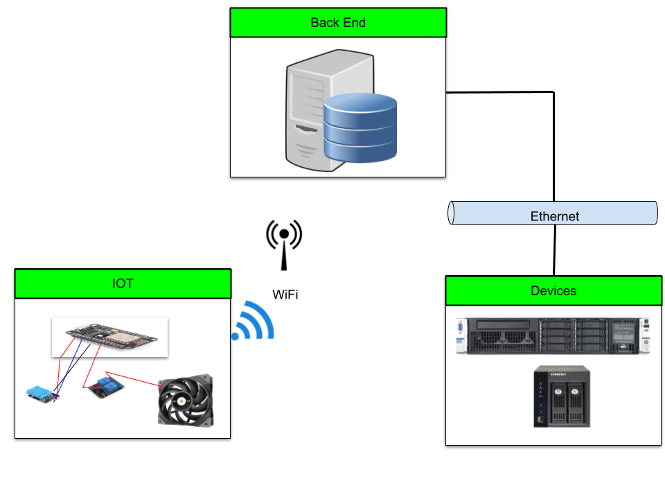
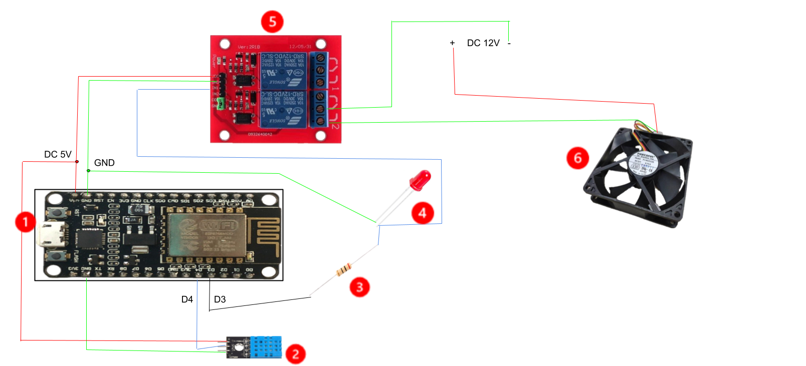

IOT機房監控
Youtube影片: 使用NodeMCU來監控機房
系統架構圖

架構說明:
系統後端使用influxDB,利用它來收集從IOT裝置來的溫溼度值。
設備使用SNMP來傳送事件。
IOT裝置將收集的數據透過SOCKETIO, 並利用ESP8266本身的WiFi無線模組, 將資料傳送回後端。
IOT接線圖

IOT元件:
NodeMCU V2
DHT11 溫溼度感測器
200歐姆電阻
5mm LED
(DC 5V) 2 Channel Relay Module
(DC 12V) 風扇